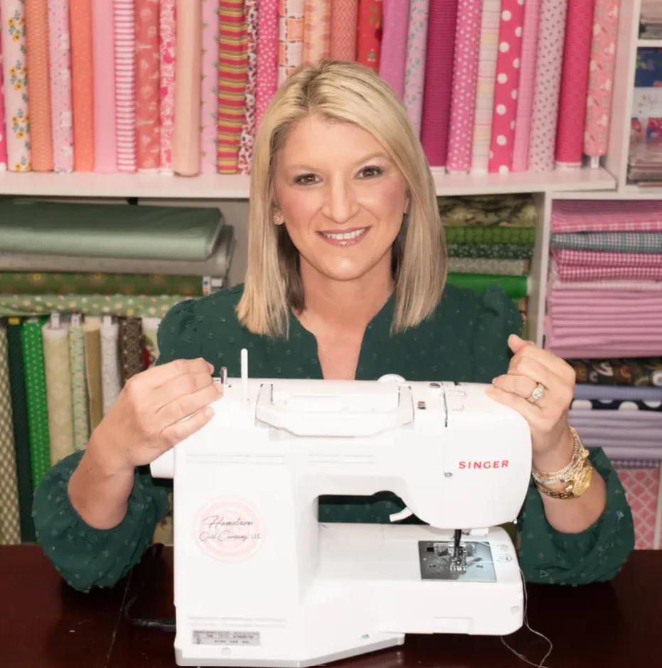
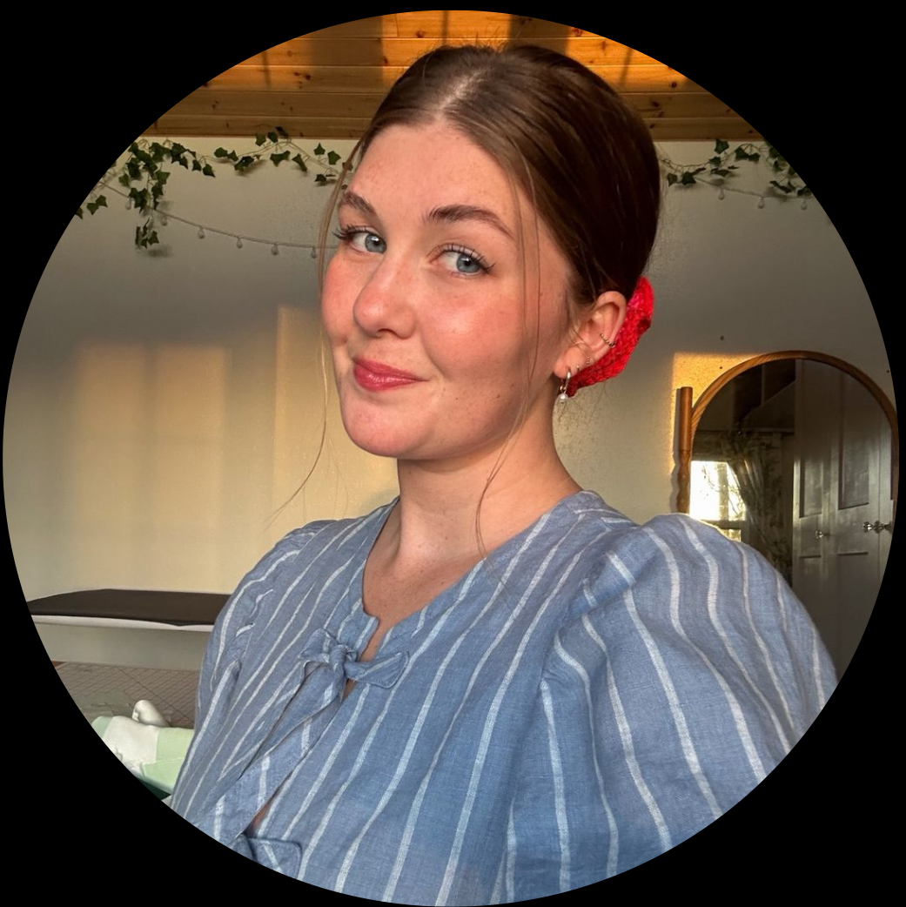
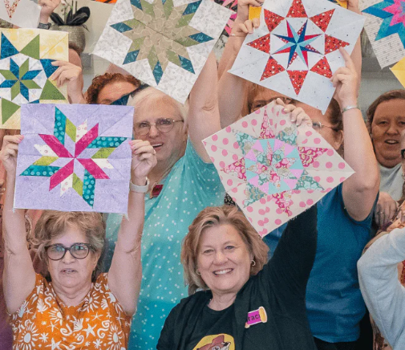
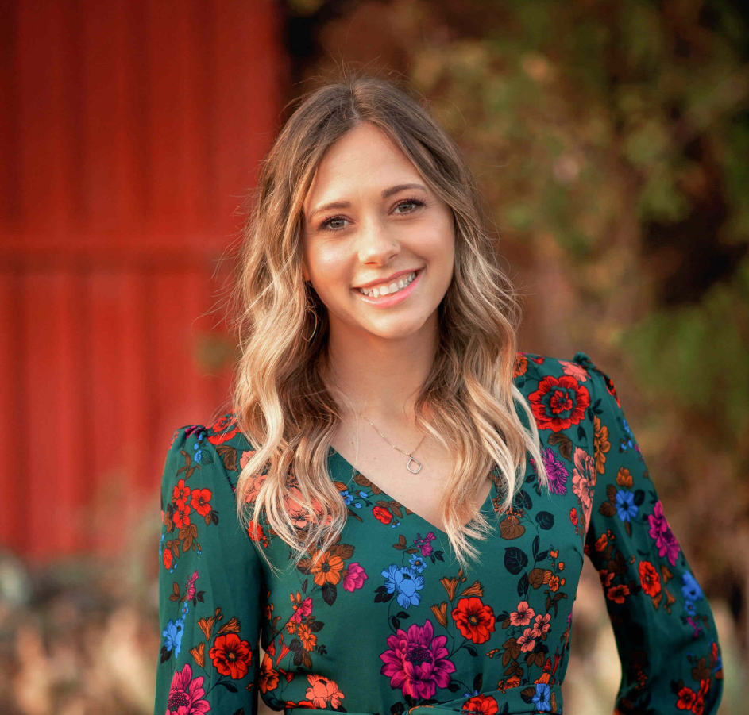
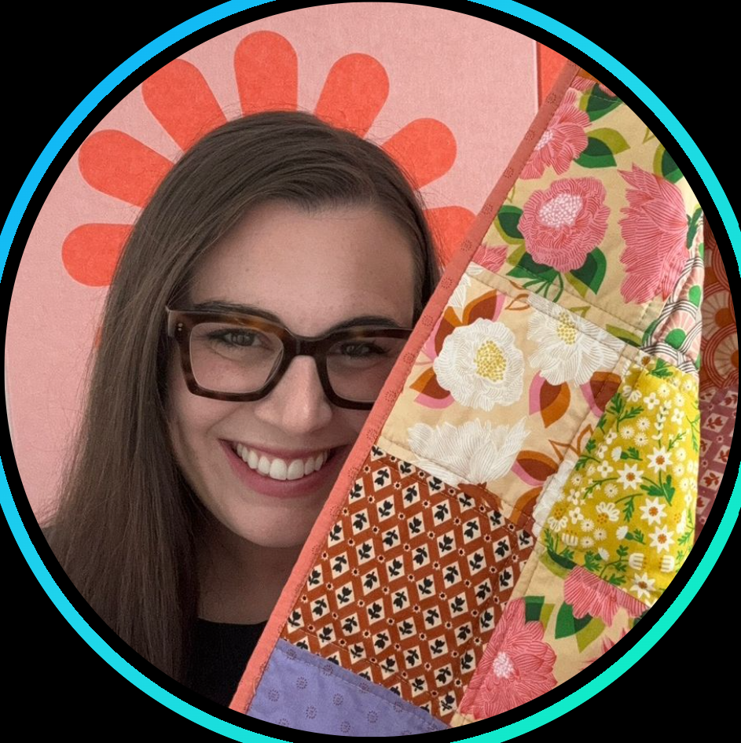
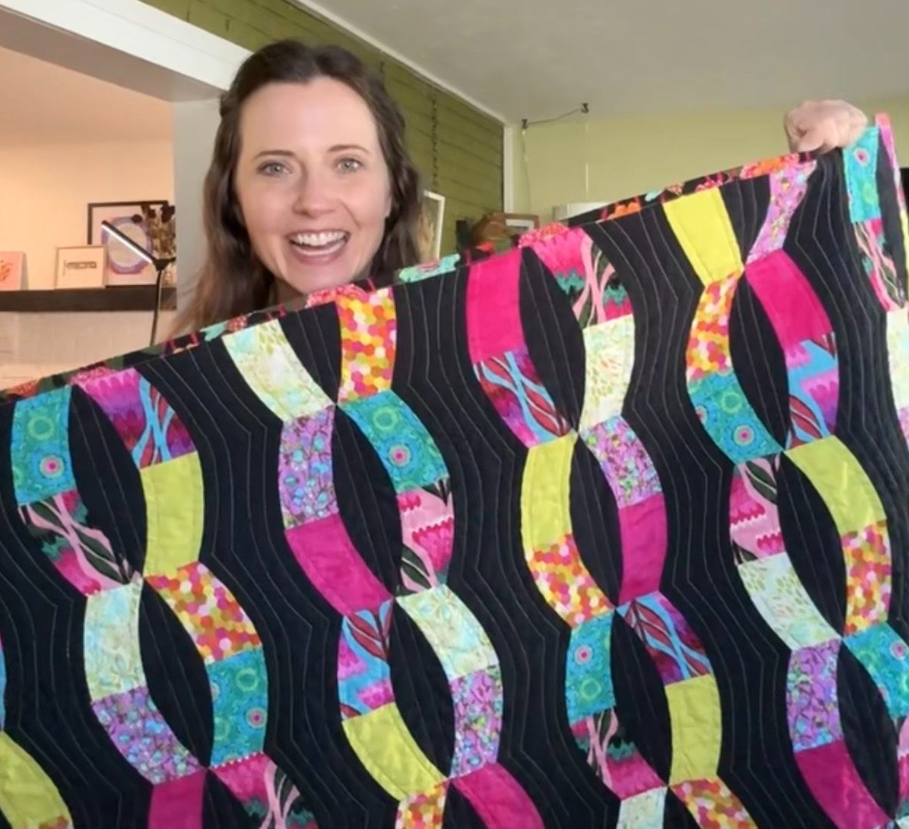

Social Media Content Creators Who Sew
The quilting community is one of the most welcoming and inspiring parts of social media, and the best way to learn is by watching and connecting with experienced quilters who love to share their craft. Whether you're looking for step-by-step tutorials, fabric inspiration, or just the encouragement to pick up your tools and get started, the creators below have something for everyone. Explore their profiles, follow along with their projects, and don't be afraid to ask questions. Find them on TikTok!

Tami Jones
Tami has tons of videos that teach beginner sewing projects while telling you great tips and tricks. She is great for getting project inspiration and learning the basics!

Sydney Graham
Sydney creates fun videos on lots of different sewing projects and quilt patterns. Scrolling through her content can give you some great inspiration for a project.
Dakota Lee Murray
Dakota creates beautiful quilts that are filled with small details. I definitely wouldn't attempt the patterns he does as a beginner, but following his sewing process is a super fun experience

Stitchin' Heaven
This account is for a small quilt store that is ran by their employees. Their videos have amazing advice for beginners. Check out their videos to gain some confidence before your first quilt!

Christina
Christina holds her own quilting classes and also posts great advice on her account. She features tons of different patterns, quilt blocks, and tutorial videos!

Maggie
Maggie uses fun and bright patterns in her quilting fabric which makes her projects stand out. She shares her process in creating a quilt while providing some helpful tips along the way.
Jen
Jen posts a variety of small quilting projects, including wall hangings. She shares her process and provides tons of cute inspiration, especially for gifts you can sew!

Rachel Stewart
Rachel is a content creator who recently started quilting, and she posts about her projects from concept to completion. She is great at showing other beginners some fun and unique patterns!